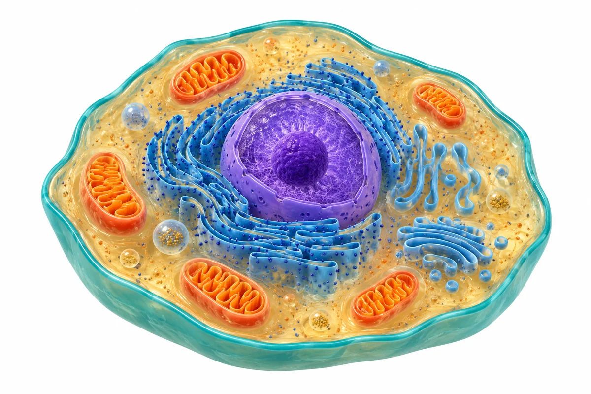

Saltar al contenido

Laboratorio vivo
PEQUEÑOS RETOS · GRANDES IDEAS
Actividades
Guía del tema
Mi progreso
Activa JavaScript para jugar
Estas actividades funcionan en tu navegador. También puedes
abrir el resumen ilustrado
.